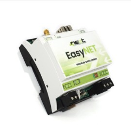

📞 +507 6675-8529
✉ contacto@zernikeal.com
Soluciones industriales para transformar las mediciones de campo en información útil para la supervisión, la automatización y la toma de decisiones.
Transformamos mediciones en información útil para la toma de decisiones.
En Zernike Panamá integramos equipos de adquisición de datos industriales capaces de recopilar información en tiempo real desde sensores, instrumentos y sistemas de campo. Estas soluciones permiten supervisar variables críticas, optimizar procesos y mejorar la eficiencia operativa.
Mediante protocolos de comunicación industriales abiertos, conectamos los dispositivos instalados en campo con sistemas de supervisión, plataformas locales y servicios en la nube, facilitando el monitoreo remoto, la telemetría y la automatización de procesos.
Las soluciones de adquisición de datos permiten conectar sensores, instrumentos y equipos industriales con plataformas de supervisión, sistemas SCADA y aplicaciones en la nube.
Los data loggers y gateways IoT recopilan las variables de campo, las almacenan y las transmiten mediante protocolos industriales estandarizados. Esto permite integrar equipos de diferentes fabricantes dentro de una misma infraestructura de monitoreo y control.
Gracias a su arquitectura flexible, estas soluciones pueden utilizarse tanto en instalaciones compactas como en redes distribuidas de instrumentación, estaciones remotas y sistemas industriales complejos.

Data logger industrial con comunicación GSM 2G/4G integrada para la adquisición, registro y transmisión remota de datos mediante Modbus, MQTT y HTTP REST.
Ver producto